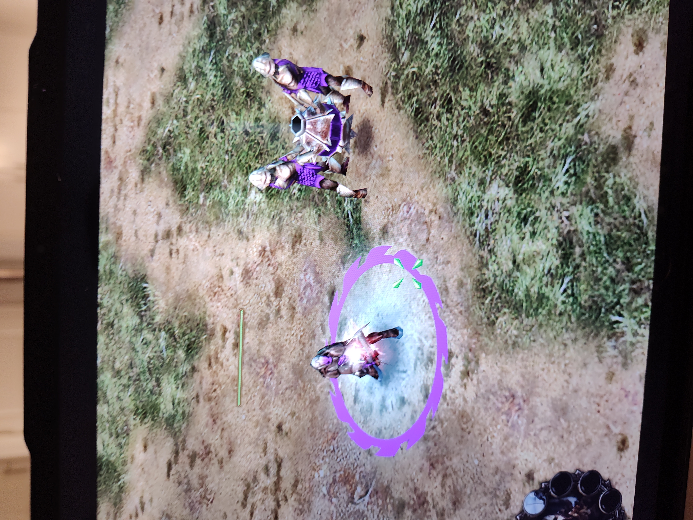

Rohan
Rohirrim

The strongest riders of any group. The Rohirrim are able to trample waves of enemies (as long as they are not pikemen) with ease. Equipped with sword and shield or bow and arrows if you get the Rohirrim archers, they make easy work of weak enemy forces. You can upgrade the Rohirrim to have horse shields, which significantly reduces enemy damage. A fully upgraded battalion of these soldiers is a challenge to handle.
Gondor
Ithilien Rangers

The Ithilien Rangers (renamed Gondor Rangers in patch 2.22) are the elite archer units for Gondor. They have the abiltiy to hide in nearby trees and have some of the highest damage output and range in the game. Rangers with fire arrows are very tough to handle.
Isengard
explosive Mines/Berserkers
The berserkers are among the most firece soldiers in any army. Bearing no armor other than a helmet and a dual-bladed sword, they are prone to rush head first into the fight. They are fairly tanky soldiers that can also light torches to use on explosive mines.
The explosive mines are the invention of Saruman. used as a seige weapon it easily obliterates walls, buildings, and foes alikke. Be wary of using fire arrows if you see one or you will set it off.
Mordor
Beasts (Trolls and Mumikil)


The beasts of Morodr are among the scariest units on the Battlefield. With their area of effect damage and thier already high single target damge, they make for some of the most punsihing units on the battlefield. The mountian troll (pictured left at level 1, in the middle at level two with what was originally a tree, now a club) is able to swing a tree or club at their enemies, easily killing half a battalion of soldiers. The Drummer troll (pictured on the right) provides leadership bonuses to nearby troops. The Mumikil (the giant elephant) is a massive beast with the abiltiy to trample units and heroes, instantly killing them under its enormous weight. They also double as seige tools, being able to destroy castle walls and do massive damage to structures as well. If you let Mordor survive long enough to get a mumikil, good luck.